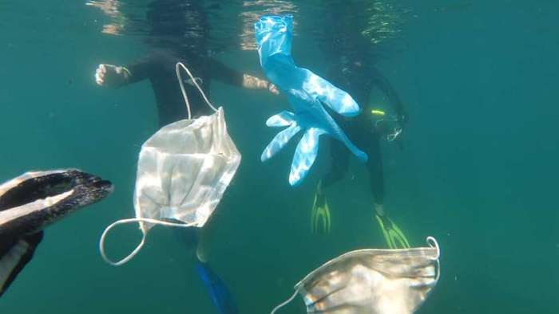

უკვე მრავალი გარემოსდაცვითი ორგანიზაცია საუბრობს იმაზე, რომ ოკეანეები, მდინარეები და საკანალიზაციო არხები გადაუმუშავებადი დამცავი საშუალებებით — ნიღბებით, ლატექსის ხელთათმანებით და სადეზინფექციო საშუალებების ბოთლებით უფრო და უფრო ბინძურდება.
საფრანგეთში დაფუძნებული ოკეანეების დამცველთა ერთ-ერთი ორგანიზაცია, Opération Mer Propre აცხადებს, რომ ხმელთაშუა ზღვაში დამცავი საშუალელების ნარჩენები ბევრად გაიზარდა.
ამ პრობლემას მხოლოდ ევროპაში არ ვხვდებით. აშშ-ის ოფიციალური პირების ცნობით, საკანალიზაციო არხები ნიღბებითა და ლატექსის ხელთათმანებით ხშირად იჭედება. ვარაუდობენ, რომ ადამიანები მათ უნიტაზებში რეცხავენ.
ასევე აღსანიშნავია, რომ პრობლემის ამსახველი მონაცემები ჯერჯერობით არ არსებობს. თუმცა აშშ-ში მდებარე 15 ქალაქის ოფიციალური წარმომადგენლების გამოკითხვისას გაირკვა, რომ პანდემიის დაწყებიდან საკანალიზაციო არხების ნარჩენებით დაბინძურებამ იმატა.
დაბინძურების პრობლემიდან გამომდინარე, აშშ-ის გარემოს დაცვის სააგენტომ ნარჩენებთან დაკავშირებით სპეციალური განცხადება გააკეთა. მასში ნათქვამია, რომ გამოყენებული სადეზინფექციო ხელსახოცები, ხელთათმანები, ნიღბები ან სხვა სახის ნარჩენები გადამუშავებისთვის განკუთვნილ ნაგვის ყუთებში არ ჩაყარონ, რადგან ისინი, შესაძლოა, საშიშროებას წარმოადგენდნენ. სანაცვლოდ, მოსახლეობას ურჩევენ, რომ ეს ნივთები დაუხარისხებელ ნაგვის ყუთებში მოათავსონ.
"გამოყენებულ ხელთათმანებსა და ნიღბებს ძირს არავინ არ უნდა ყრიდეს. ძირს დაყრილი დაბინძურებული ნარჩენები COVID-19-ით ინფიცირების რისკს ზრდის და ასევე გარემოსთვის მოაქვს ზიანი", განაცხადა ჩრდილოეთ ამერიკის მყარი სამრეწველო ნარჩენების ასოციაციის აღმასრულებელმა ხელმძღვანელმა, დევიდ ბიდერმენმა.